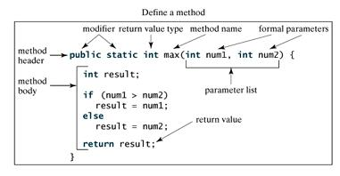

Java 方法
在前面几个章节中我们经常使用到 System.out.println()，那么它是什么呢？
println() 是一个方法。
System 是系统类。
out 是标准输出对象。
这句话的用法是调用系统类 System 中的标准输出对象 out 中的方法 println()。
那么什么是方法呢？
Java方法是语句的集合，它们在一起执行一个功能。
方法是解决一类问题的步骤的有序组合
方法包含于类或对象中
方法在程序中被创建，在其他地方被引用
方法的优点
1. 使程序变得更简短而清晰。
2. 有利于程序维护。
3. 可以提高程序开发的效率。
4. 提高了代码的重用性。
方法的命名规则
1.方法的名字的第一个单词应以小写字母作为开头，后面的单词则用大写字母开头写，不使用连接符。例如：addPerson。
2.下划线可能出现在 JUnit 测试方法名称中用以分隔名称的逻辑组件。一个典型的模式是：test<MethodUnderTest>_<state>，例如 testPop_emptyStack。
方法的定义
一般情况下，定义一个方法包含以下语法：
修饰符 返回值类型 方法名(参数类型 参数名){ ... 方法体 ... return 返回值; }
方法包含一个方法头和一个方法体。下面是一个方法的所有部分：
修饰符：修饰符，这是可选的，告诉编译器如何调用该方法。定义了该方法的访问类型。
返回值类型 ：方法可能会返回值。returnValueType 是方法返回值的数据类型。有些方法执行所需的操作，但没有返回值。在这种情况下，returnValueType 是关键字void。
方法名：是方法的实际名称。方法名和参数表共同构成方法签名。
参数类型：参数像是一个占位符。当方法被调用时，传递值给参数。这个值被称为实参或变量。参数列表是指方法的参数类型、顺序和参数的个数。参数是可选的，方法可以不包含任何参数。
方法体：方法体包含具体的语句，定义该方法的功能。

如：
public static int age(int birthday){...}
参数可以有多个：
static float interest(float principal, int year){...}
注意： 在一些其它语言中方法指过程和函数。一个返回非void类型返回值的方法称为函数；一个返回void类型返回值的方法叫做过程。
实例
下面的方法包含 2 个参数 num1 和 num2，它返回这两个参数的最大值。
/** 返回两个整型变量数据的较大值 */ public static int max(int num1, int num2) { int result; if (num1 > num2) result = num1; else result = num2; return result; }
更简略的写法（三元运算符）：
public static int max(int num1, int num2) { return num1 > num2 ? num1 : num2; }
方法调用
Java 支持两种调用方法的方式，根据方法是否返回值来选择。
当程序调用一个方法时，程序的控制权交给了被调用的方法。当被调用方法的返回语句执行或者到达方法体闭括号时候交还控制权给程序。
当方法返回一个值的时候，方法调用通常被当做一个值。例如：
int larger = max(30, 40);
如果方法返回值是void，方法调用一定是一条语句。例如，方法println返回void。下面的调用是个语句：
System.out.println("欢迎访问菜鸟教程！");
示例
下面的例子演示了如何定义一个方法，以及如何调用它：
TestMax.java 文件代码：
public class TestMax { /** 主方法 */ public static void main(String[] args) { int i = 5; int j = 2; int k = max(i, j); System.out.println( i + " 和 " + j + " 比较，最大值是：" + k); } /** 返回两个整数变量较大的值 */ public static int max(int num1, int num2) { int result; if (num1 > num2) result = num1; else result = num2; return result; } }
以上实例编译运行结果如下：
5 和 2 比较，最大值是：5
这个程序包含 main 方法和 max 方法。main 方法是被 JVM 调用的，除此之外，main 方法和其它方法没什么区别。
main 方法的头部是不变的，如例子所示，带修饰符 public 和 static,返回 void 类型值，方法名字是 main,此外带个一个 String[] 类型参数。String[] 表明参数是字符串数组。
void 关键字
本节说明如何声明和调用一个 void 方法。
下面的例子声明了一个名为 printGrade 的方法，并且调用它来打印给定的分数。
示例
TestVoidMethod.java 文件代码：
public class TestVoidMethod { public static void main(String[] args) { printGrade(78.5); } public static void printGrade(double score) { if (score >= 90.0) { System.out.println('A'); } else if (score >= 80.0) { System.out.println('B'); } else if (score >= 70.0) { System.out.println('C'); } else if (score >= 60.0) { System.out.println('D'); } else { System.out.println('F'); } } }
以上实例编译运行结果如下：
C
这里printGrade方法是一个void类型方法，它不返回值。
一个void方法的调用一定是一个语句。 所以，它被在main方法第三行以语句形式调用。就像任何以分号结束的语句一样。
通过值传递参数
调用一个方法时候需要提供参数，你必须按照参数列表指定的顺序提供。
例如，下面的方法连续n次打印一个消息：
TestVoidMethod.java 文件代码：
public static void nPrintln(String message, int n) { for (int i = 0; i < n; i++) { System.out.println(message); } }
示例
下面的例子演示按值传递的效果。
该程序创建一个方法，该方法用于交换两个变量。
TestPassByValue.java 文件代码：
public class TestPassByValue { public static void main(String[] args) { int num1 = 1; int num2 = 2; System.out.println("交换前 num1 的值为：" + num1 + " ，num2 的值为：" + num2); // 调用swap方法 swap(num1, num2); System.out.println("交换后 num1 的值为：" + num1 + " ，num2 的值为：" + num2); } /** 交换两个变量的方法 */ public static void swap(int n1, int n2) { System.out.println("\t进入 swap 方法"); System.out.println("\t\t交换前 n1 的值为：" + n1 + "，n2 的值：" + n2); // 交换 n1 与 n2的值 int temp = n1; n1 = n2; n2 = temp; System.out.println("\t\t交换后 n1 的值为 " + n1 + "，n2 的值：" + n2); } }
以上实例编译运行结果如下：
交换前 num1 的值为：1 ，num2 的值为：2
进入 swap 方法
交换前 n1 的值为：1，n2 的值：2
交换后 n1 的值为 2，n2 的值：1交换后 num1 的值为：1 ，num2 的值为：2
传递两个参数调用swap方法。有趣的是，方法被调用后，实参的值并没有改变。
方法的重载
上面使用的max方法仅仅适用于int型数据。但如果你想得到两个浮点类型数据的最大值呢？
解决方法是创建另一个有相同名字但参数不同的方法，如下面代码所示：
public static double max(double num1, double num2) { if (num1 > num2) return num1; else return num2; }
如果你调用max方法时传递的是int型参数，则 int型参数的max方法就会被调用；
如果传递的是double型参数，则double类型的max方法体会被调用，这叫做方法重载；
就是说一个类的两个方法拥有相同的名字，但是有不同的参数列表。
Java编译器根据方法签名判断哪个方法应该被调用。
方法重载可以让程序更清晰易读。执行密切相关任务的方法应该使用相同的名字。
重载的方法必须拥有不同的参数列表。你不能仅仅依据修饰符或者返回类型的不同来重载方法。
变量作用域
变量的范围是程序中该变量可以被引用的部分。
方法内定义的变量被称为局部变量。
局部变量的作用范围从声明开始，直到包含它的块结束。
局部变量必须声明才可以使用。
方法的参数范围涵盖整个方法。参数实际上是一个局部变量。
for循环的初始化部分声明的变量，其作用范围在整个循环。
但循环体内声明的变量其适用范围是从它声明到循环体结束。它包含如下所示的变量声明：

你可以在一个方法里，不同的非嵌套块中多次声明一个具有相同的名称局部变量，但你不能在嵌套块内两次声明局部变量。
命令行参数的使用
有时候你希望运行一个程序时候再传递给它消息。这要靠传递命令行参数给main()函数实现。
命令行参数是在执行程序时候紧跟在程序名字后面的信息。
实例
下面的程序打印所有的命令行参数：
CommandLine.java 文件代码：
public class CommandLine { public static void main(String args[]){ for(int i=0; i<args.length; i++){ System.out.println("args[" + i + "]: " + args[i]); } } }
如下所示，运行这个程序：
$ javac CommandLine.java
$ java CommandLine this is a command line 200 -100
args[0]: this
args[1]: is
args[2]: a
args[3]: command
args[4]: line
args[5]: 200
args[6]: -100
构造方法
当一个对象被创建时候，构造方法用来初始化该对象。构造方法和它所在类的名字相同，但构造方法没有返回值。
通常会使用构造方法给一个类的实例变量赋初值，或者执行其它必要的步骤来创建一个完整的对象。
不管你是否自定义构造方法，所有的类都有构造方法，因为Java自动提供了一个默认构造方法，默认构造方法的访问修改符和类的访问修改符相同(类为 public，构造函数也为 public；类改为 protected，构造函数也改为 protected)。
一旦你定义了自己的构造方法，默认构造方法就会失效。
实例
下面是一个使用构造方法的例子：
// 一个简单的构造函数 class MyClass { int x; // 以下是构造函数 MyClass() { x = 10; } }
你可以像下面这样调用构造方法来初始化一个对象：
ConsDemo.java 文件代码：
public class ConsDemo { public static void main(String args[]) { MyClass t1 = new MyClass(); MyClass t2 = new MyClass(); System.out.println(t1.x + " " + t2.x); } }
大多时候需要一个有参数的构造方法。
实例
下面是一个使用构造方法的例子：
// 一个简单的构造函数 class MyClass { int x; // 以下是构造函数 MyClass(int i ) { x = i; } }
你可以像下面这样调用构造方法来初始化一个对象：
ConsDemo.java 文件代码：
public class ConsDemo { public static void main(String args[]) { MyClass t1 = new MyClass( 10 ); MyClass t2 = new MyClass( 20 ); System.out.println(t1.x + " " + t2.x); } }
运行结果如下：
10 20
可变参数
JDK 1.5 开始，Java支持传递同类型的可变参数给一个方法。
方法的可变参数的声明如下所示：
typeName... parameterName
在方法声明中，在指定参数类型后加一个省略号(...) 。
一个方法中只能指定一个可变参数，它必须是方法的最后一个参数。任何普通的参数必须在它之前声明。
实例
VarargsDemo.java 文件代码：
public class VarargsDemo { public static void main(String args[]) { // 调用可变参数的方法 printMax(34, 3, 3, 2, 56.5); printMax(new double[]{1, 2, 3}); } public static void printMax( double... numbers) { if (numbers.length == 0) { System.out.println("No argument passed"); return; } double result = numbers[0]; for (int i = 1; i < numbers.length; i++){ if (numbers[i] > result) { result = numbers[i]; } } System.out.println("The max value is " + result); } }
以上实例编译运行结果如下：
The max value is 56.5The max value is 3.0
finalize() 方法
Java 允许定义这样的方法，它在对象被垃圾收集器析构(回收)之前调用，这个方法叫做 finalize( )，它用来清除回收对象。
例如，你可以使用 finalize() 来确保一个对象打开的文件被关闭了。
在 finalize() 方法里，你必须指定在对象销毁时候要执行的操作。
finalize() 一般格式是：
protected void finalize() { // 在这里终结代码 }
关键字 protected 是一个限定符，它确保 finalize() 方法不会被该类以外的代码调用。
当然，Java 的内存回收可以由 JVM 来自动完成。如果你手动使用，则可以使用上面的方法。
实例
FinalizationDemo.java 文件代码：
public class FinalizationDemo { public static void main(String[] args) { Cake c1 = new Cake(1); Cake c2 = new Cake(2); Cake c3 = new Cake(3); c2 = c3 = null; System.gc(); //调用Java垃圾收集器 } } class Cake extends Object { private int id; public Cake(int id) { this.id = id; System.out.println("Cake Object " + id + "is created"); } protected void finalize() throws java.lang.Throwable { super.finalize(); System.out.println("Cake Object " + id + "is disposed"); } }
运行以上代码，输出结果如下：
$ javac FinalizationDemo.java
$ java FinalizationDemoCake Object 1is created
Cake Object 2is created
Cake Object 3is created
Cake Object 3is disposed
Cake Object 2is disposed